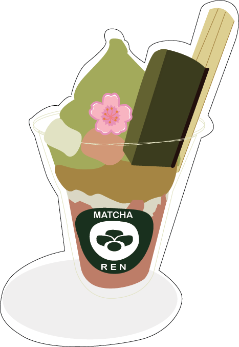
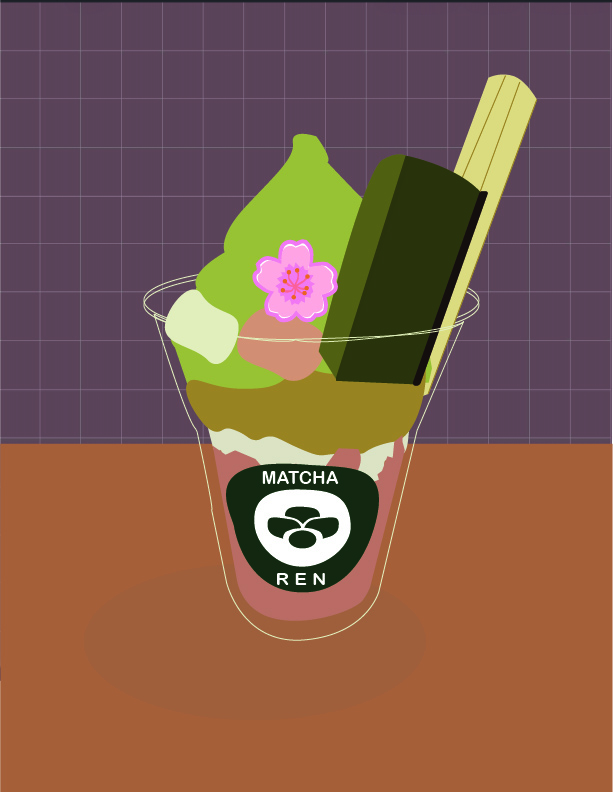
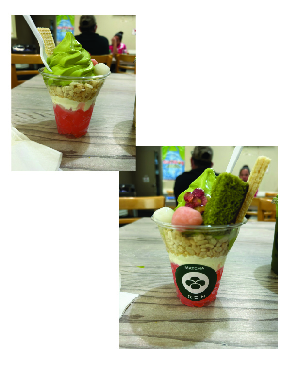
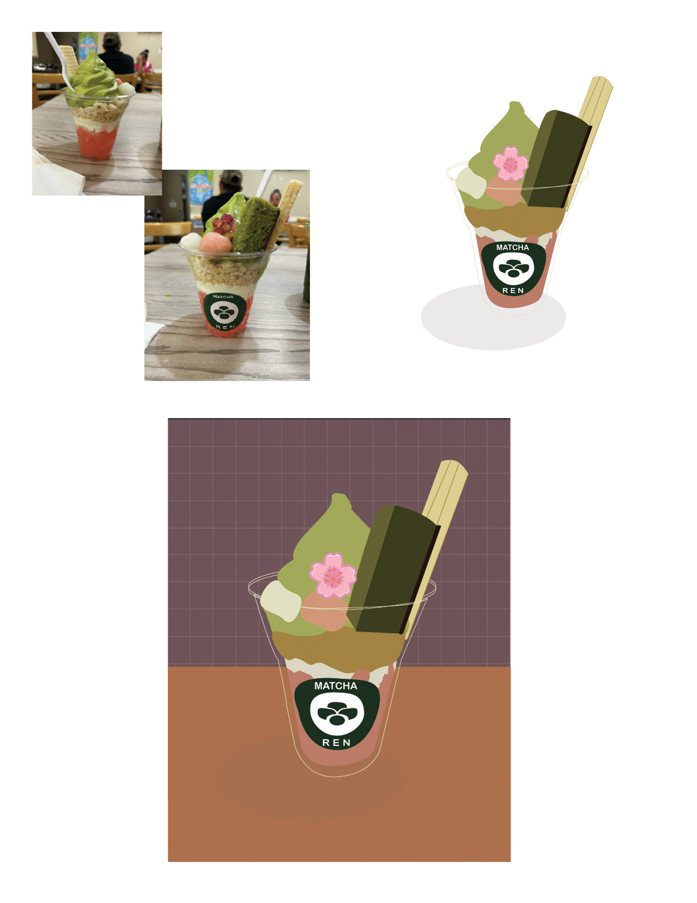

This is the second version of the project that I attempted.




The illustrator sticker project was a bit of a breeze for me once I got the hang of the program. This was actually the second attempt (the first was my pink switch) based on a day where I went to get a matcha parfait.
The way the photos are arranged also show the overall process, such as the front and back images of the dessert, and the two versions of a sticker and one with a background. Also, it was the best dessert I ever had.